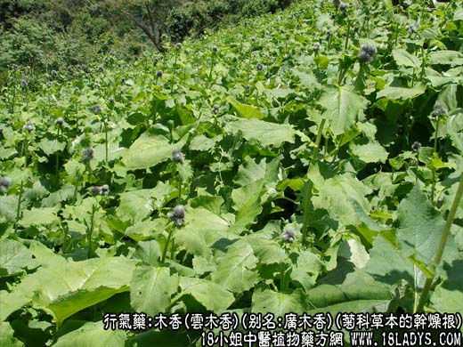
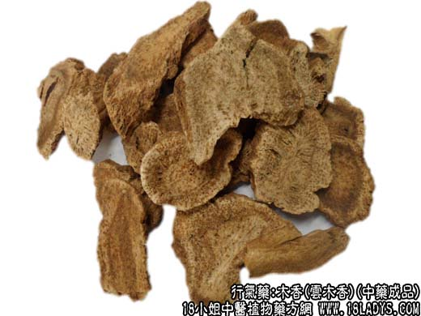
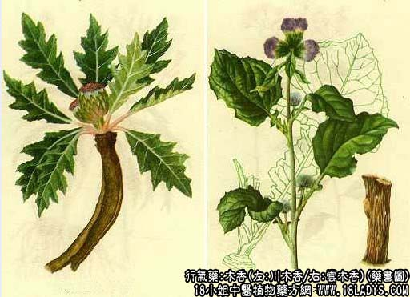

本品为常用中药。《神农本草经》列为上品。商品系进口的广木香（由广东进口）和国产的川木香两类，药用以前者为主。新中国成立后，我国云南引种广木香成功，称云木香。质量与进口广木香相同，并有较大量的生产。现广木香进口极少。
1、国产木香类—云木香
别名：广木香。
来源：为菊科多年生草本植物云木香（Aucklandia lappa Decne）的干燥根，均为栽培。
产地：主产于云南丽江、纳西族自治县，现四川、北京等地亦有栽培。
性状鉴别：根呈类圆柱形或枯骨形。长短粗细不一，长5～15厘米，直径0.5～4厘米。表面棕黄色至灰棕色，有显著的纵沟及侧根痕。有的可见网状皱纹。质坚硬。断面黄棕色或褐色，有褐色小点（散在油室），形成层环状，棕色，有放射状纹理。老根有骨髓。具特异的甜蜜香气，味苦而带辣。以根条均匀，质坚实，色棕黄，香气浓者为佳。
主要成分：含挥油、云木香硷（Saussurine）、树脂、菊糖。挥发油主成分为木香内脂（C15H20O2）、木香酸（C15H22O2）、木香醇（C15H24O）、a一及b一木香烃（C15H24）等。（注：化学元素数字为缩小并在右下）
功效与作用：行气整肠而止痛止泻，现已证实其作用为：1、抗菌和抗真菌。体外试验木香的粉剂对大肠杆菌、枯草杆菌、伤寒杆菌、白色葡萄球菌等有较强的抗菌作用。对羊毛样小孢子菌等皮癣菌有较强的抑制作用。2、驱风、行气止痛，促进肠蠕动。动物实验证实，木香煎液能通过对迷走神经的作用，使在位大肠兴奋，收缩力加强，蠕动加快，因而能缓解胃肠气胀（鼓肠）所致的腹痛。
炮制：切片或捣碎，生用。
性味：苦、辛、温。
归经：入脾、大肠、三焦经。
功能：行气，止痛，健脾，消食。
主治：胸腹胀痛，呕吐泻泄，里急后重，消化不良。
临床应用：为治疗腹痛、泻痢的常用药。
1、用于治疗腹痛。由于能行肠胃滞气，所以消化不良或虫积等所致的腹满胀痛，均可应用。对消化不良，可用木香醒脾开胃止痛。有食积，呕吐、下泻者，配山楂、麦芽、陈皮等，方如木香顺气丸。如腹痛由虫积所致，则在驱虫方剂内加入木香一味，对减轻腹痛有帮助。
2、用于治疗痢疾泄泻，对兼有里急后重、腹部胀闷者更适宜。一般认为煨用较好，但不经煨用者也有效。如属下痢赤白、里急后重（如细菌性痢疾），常配川连，如香连丸（成药），或在治痢方剂内加入木香1.5～3g能加强止痛止泻作用。如属泄清稀、腹痛肠鸣（如急性肠炎），可配苍术、厚朴、茯苓、木瓜、黄芩等。有人用木香配蝉蜕、防风、秦艽等治湿疹，取其祛湿作用。
此外，在补剂中加木香能醒脾胃，有助于补药的吸收，同时能减轻补药的腻滞，故归脾汤等木香与补益药同用。
使用注意：1、内用燥热者不宜用木香。阴虚血热者一般忌用，必需应用时应与益气滋阴药同用，以缓和其辛燥之性。
2、木香入补宜后下煎服。行气导滞，止痛止泻以磨竞较好（原粉剂作用较大）。
用量：1.5～9g入丸散剂分量减半。
处方举例：木香顺气丸（成药）：含木香、香附、陈皮、青皮、枳壳、山楂、麦芽、神曲、台乌、槟榔、茯苓、莱菔子、甘草等，每服3～6g每日2次，温开水送下。
川木香
来源：为菊科多年生草本植物川木香（Jurjnea aff. souliei Franch .）的干燥根。均为野生。
产地：主要产于四川阿坝自治州的大金、小金、马尔康、松潘、理县及雅安地区的宝兴等地。
性状鉴别：根呈圆柱形或槽状半圆柱形，长10～30厘米，直径1.5～3厘米。表面黄褐色或暗褐色，粗糙，具支根痕，刮去外皮，露出丝瓜络状的纤维网。体轻质硬。断面有黄色或黄棕色的放射状花纹，并显多数裂隙，有的中心髓部呈腐朽状。香气特殊，味苦，嚼之粘牙。以根条粗壮结实，体重，油多气香，裂沟少者为佳。
效用：略同云木香，习惯认为效用不及云木香。
2、进口木香类
老木香
来源：与云木香系同一原植物。
产地：主产于印度、巴基斯坦、克什米尔等地。
性状鉴别：根多为劈裂的块状，如折断之枯骨。长约5～10厘米，粗约1.5～3厘米。表面灰黄色或灰褐色，有扭曲而深的纵沟，质坚硬。断面黄绿色或黄棕色，有稠密的深棕色小点（油室）。香气浓烈，味苦辣。以块大，中节，油性足，芳香浓烈者为佳。
效用：同云木香，习惯认为品质优良。
新木香
来源：同上。
产地：主产于印度旁遮普等地。
性状鉴别：根呈扁圆柱形，多切成段，长短大小不一，长5～15厘米，直径2～3厘米。表面灰黄色或黄褐色，具纵皱纹及须根痕，顶端如胡萝卜顶，中央有髓。质较松。断面淡黄白色，有放射状纹理，形成层环状，棕色小点较少。香气较结，味苦辣。以根条粗壮均匀，质坚实，色灰黄，香味浓者为佳。
效用：同云木香。
注：1、云木香成分：主要含挥发油、树脂、云木香碱、菊糖及甾醇等。
2、除上列两类木香外，商品中经常见到的，还有：
土木香，为菊科植物土木香（河北、山西栽培的祁木香）及总状青木香（新疆木香、野生）的干燥根。在广木香货源不足时，有的地区作木香用。而华北、东北有些地区又曾作青木香用。
性状界别：根呈圆柱形至长圆锥形，略弯曲，根头部膨大，或已切成块（根头）或长段。长约10～25厘米，直径约0.7～3厘米。表面淡褐色，有纵皱纹，顶端有稍凹陷的茎痕及棕红色的叶柄残茎，质坚硬，断面中心黄白色至淡黄棕色，向外有一层颜色较深的形成层，呈环状。气清香，味苦，嚼之有清凉感。
越西木香：解放后，发现与四川的越西故名，为菊科植物木里木香和越西木香的干燥根。主产于四川西昌地区各县，野生。本品在广木香货源不足时，也曾作木香药用。
性状鉴别：根呈圆柱形或半圆柱形，略似鸡骨。长约5～25厘米，直径0.5～2厘米。表面黄褐色或灰褐色，有纵皱纹及纵裂沟，并有突起的须根痕。质坚硬。断面棕黄色，多有偏心性放射状纹理及油室，皮部较薄，形成层颜色较深。油质较重，气浊，味微甜而苦辣，嚼之粘牙。
这两种木香的效用均与云木香近似，而力稍逊。其中越西木香，京津曾作木香使用，现在以云木香为主。天津一产的紫雪散，其中青木香系和河北栽培品土木香。